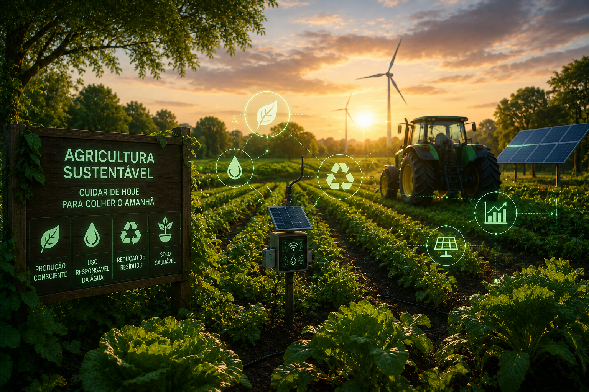

Métodos que unem produtividade e responsabilidade ambiental.
A agricultura sustentável é um modelo de produção que busca atender às necessidades atuais sem comprometer os recursos naturais das futuras gerações. Ela combina tecnologia, inovação e boas práticas agrícolas para produzir alimentos de forma eficiente, preservando o solo, a água, a biodiversidade e reduzindo os impactos ambientais.
Alternância de diferentes plantações para melhorar a fertilidade do solo, controlar pragas naturalmente e aumentar a produtividade.
Sistemas automatizados utilizam sensores para fornecer apenas a quantidade necessária de água, evitando desperdícios.
GPS, drones e softwares monitoram as lavouras em tempo real, permitindo o uso eficiente de fertilizantes, sementes e defensivos.
Maior eficiência no uso dos recursos naturais
Redução do desperdício de água em sistemas inteligentes
Aumento da produtividade com práticas sustentáveis